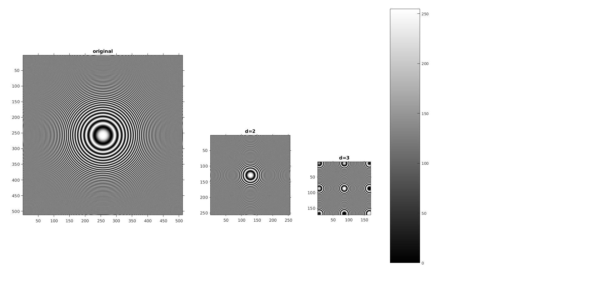
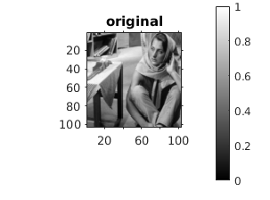
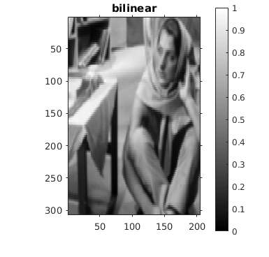
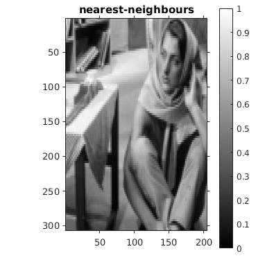

Contents
MyMainScript
clc;
clear;
close all;
tic;
ShrinkImageByFactor
im = imread('../data/circles_concentric.png');
I = myShrinkImageByFactorD(im,2);
J = myShrinkImageByFactorD(im,3);
f = figure;
h1 = subplot(1,3,1);
im1 = imshow(im);
axis on;
title('original');
h2 = subplot(1,3,2);
im2 = imshow(I);
axis on;
title('d=2');
h3 = subplot(1,3,3);
im3 = imshow(J);
axis on;
title('d=3');
h1.set('units','pixels');
x = get(h1, 'Position');
set(h1 , 'Position', [x(1),x(2)+200,512, 512]);
get(h1, 'Position');
h2.set('units','pixels');
y = get(h2, 'Position');
set(h2 , 'Position', [50+512-x(3)+y(1),y(2)+200, 256, 256]);
get(h2, 'Position');
h3.set('units','pixels');
z = get(h3, 'Position');
set(h3 , 'Position', [100+256+512-x(3)-y(3)+z(1),z(2)+200, 171, 171]);
get(h3, 'Position');
cb = colorbar;
set(cb,'position',[0.65,0.10,0.05,0.87]);
set(f , 'Position' ,[200 100 2400 2400]);

Bilinear Interpolation
im = imread('../data/barbaraSmall.png');
I = zeros(3*size(im,1)-2, 2*size(im,2)-1);
I = myBilinearInterpolation(im,I);
figure;
im1 = imshow(mat2gray(im));
axis on;
title('original');
cb = colorbar;
set(cb,'position',[0.80,0.10,0.05,0.87]);
figure;
im2 = imshow(mat2gray(I));
axis on;
title('bilinear');
cb = colorbar;
set(cb,'position',[0.80,0.10,0.05,0.87]);
 
Nearest -Neighbours
I = myNearestNeighborInterpolation(im,I);
figure;
im1 = imshow(mat2gray(im));
axis on;
title('original');
cb = colorbar;
set(cb,'position',[0.80,0.10,0.05,0.87]);
figure;
im2 = imshow(mat2gray(I));
axis on;
title('nearest-neighbours');
cb = colorbar;
set(cb,'position',[0.80,0.10,0.05,0.87]);
myNumOfColors = 200;
myColorScale = [ [0:1/(myNumOfColors-1):1]' , [0:1/(myNumOfColors-1):1]' , [0:1/(myNumOfColors-1):1]' ];
colormap (myColorScale);
daspect ([1 1 1]);
axis tight;
toc;
Elapsed time is 1.856807 seconds.
